Anonymize the joints that leak identity — not the ones that carry the action.
Skeleton data looks anonymous, but motion style re-identifies people. XAnon uses Integrated Gradients on a utility model and a threat model to score every joint's contribution to privacy risk versus task utility, then spends its masking and its differential-privacy budget only where identity actually lives.
University of North Carolina at Charlotte
The problem
Stripping the pixels does not strip the person
Skeleton sequences are compact, cheap to transmit, and stripped of appearance — which is exactly why they get shared. But the way a person moves is itself a biometric. Prior defences treat every joint as equally guilty, so they buy privacy by destroying the signal the downstream task needs.
Motion is a biometric
Gait, limb proportions and movement style support re-identification, and leak attributes such as age, gender and health condition. Three tracked joints are enough for behavioural authentication in VR.
Blanket noise wastes budget
Adding uniform Gaussian noise to all 25 joints spends the privacy budget on joints that carry no identity. At σ = 0.01, naïve noise still leaves re-identification at 76.1%.
Blanket masking wastes signal
Consumer-VR-style masking keeps only head and hands. It cuts re-identification to 59.0% on NTU60 — but it is a fixed, data-independent choice with no notion of which joints mattered.
Attribution is the missing signal
Integrated Gradients already tells us which inputs a model relies on. Run it against both the utility model and the threat model and the disagreement between them is a per-joint privacy budget.
Targeted beats uniform
Under the same total ε, redistributing noise toward sensitive joints drops re-identification from 76.1% to 12.7% — a privacy gain that costs nothing extra in budget, only in allocation.
Visual plausibility matters
Zeroing joints produces collapsed, unnatural skeletons — unusable for VR or animation. The differentially private variants keep motion continuous while still suppressing identity.
Method
Score every joint, then spend the budget where identity lives
A 3D skeleton sequence is $s \in \mathbb{R}^{T \times J \times C}$ with $T=75$ frames, $J=25$ joints and $C=3$ coordinates. Two SGN models are trained on it: a utility model $f^U$ for action recognition and a threat model $f^P$ for re-identification. Integrated Gradients attributes each model's prediction back to individual joint coordinates, and the gap between the two attributions defines what to obfuscate.
Train both sides
Train the utility model $f^U$ to recognise actions and the threat model $f^P$ to re-identify performers, both on the same SGN backbone. The threat model is the adversary we are defending against, made explicit.
Attribute and combine
Run Integrated Gradients against both models, aggregate the absolute attributions over frames and coordinates to get per-joint scores $\phi^U_j$ and $\phi^P_j$, normalise each, then fuse them into one sensitivity score $\psi_j$.
Obfuscate selectively
Rank joints by $\psi_j$ and apply one of three mechanisms: hard-zero the top $\beta$ fraction, split the privacy budget across two groups, or give every joint its own ε inversely proportional to its sensitivity.
The two equations that do the work
Joint-level attribution
Absolute Integrated Gradients attributions, averaged over all frames and all three coordinate channels, collapse a $T \times J \times C$ tensor into one scalar per joint for each model.
Combined sensitivity score
A joint is sensitive when it is informative for identity and expendable for the action. The hyperparameter $\alpha \in [0,1]$ sets how strongly the second term counts; $\alpha = 0.9$ works best across every experiment in the paper.
Three mechanisms, one score
Hard suppression of the top-β joints
Sort joints by $\psi_j$ and take the top $\beta$ fraction as the sensitive set $G_s$ with $|G_s| = \beta J$; the rest form $G_n$. Every coordinate of every joint in $G_s$ is set to zero for the whole sequence.
Cheapest mechanism, strongest privacy per unit of utility lost — but it produces visibly collapsed skeletons, which is what motivates the two noise-based variants.
Where it lands
At $\alpha = 0.9$, $\beta = 0.2$ on NTU60: re-identification falls from 81.6% to 21.8% while action recognition holds at 81.2%.
Pushing $\beta$ past 0.2 collapses utility fast — at $\beta = 0.6$ action recognition is already down to 14.5% while re-identification only improves to 9.4%. Masking one fifth of the joints is the knee of the curve.
Two groups, two privacy budgets
The same $G_s$/$G_n$ split as masking, but instead of zeroing, each group draws Gaussian noise at its own scale. The ratio $\gamma \in (0,1]$ sets $\epsilon_s = \gamma\epsilon_n$: smaller $\gamma$ means a tighter budget and therefore more noise on the sensitive joints.
Where it lands
At $\sigma = 0.01$, $\gamma = 0.03$ on NTU60: re-identification 12.7%, action recognition 72.2%. The strongest privacy of the three mechanisms.
$\gamma$ is a clean dial. Raising it to 0.05 buys back 11 points of action recognition and gives up 19 points of privacy; dropping it to 0.02 does the reverse.
A privacy budget per joint
No groups at all — every joint gets its own budget, inversely proportional to its sensitivity, with $\gamma_j$ min-max normalised into $[0.01, 1]$ for numerical stability. Noise is then drawn as $\tilde{s}_j = s_j + \mathcal{N}(0, \sigma_j^2)$ with $\sigma_j \propto 1/\epsilon_j$.
Where it lands
At $\sigma = 0.01$, $\alpha = 0.9$ on NTU60: re-identification 28.2%, action recognition 80.0% — the best-balanced operating point in the paper.
Smart Noise is also the most fragile to $\alpha$. At $\sigma = 0.01$ and $\alpha \le 0.5$ the continuous budget concentrates noise so aggressively that both tasks collapse below 1%. Keep $\alpha = 0.9$.
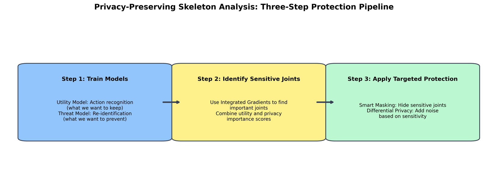
Interactive
Turn the dials
Smart Masking has two knobs: $\alpha$ weights utility against privacy inside the sensitivity score, and $\beta$ sets how much of the skeleton gets suppressed. Every accuracy pair below is a measured NTU60 result from Table 2 of the paper — not an interpolation.
Higher α protects joints the action model relies on. Measured at 0.1, 0.5 and 0.9.
Measured at 0.2, 0.4, 0.6 and 0.8.
Accuracies are measured NTU60 values for each (α, β) pair. The joint ordering drawn on the skeleton is illustrative — it follows the extremity-first pattern reported in the paper's attribution figures (head, hands and feet score highest; spine and torso lowest), but the true ranking is recomputed per sequence at inference time and varies from sample to sample.
Results
NTU60 and NTU120
Both datasets are denoised, restricted to single-actor sequences, and fixed to $T = 75$ frames — 11 action classes were dropped from NTU60 and 26 from NTU120. Utility is top-1 action recognition accuracy; privacy is top-1 re-identification accuracy, where lower is better.
| Dataset | Task | Non-private | Consumer VR | Smart Masking |
|---|---|---|---|---|
| NTU60 | AR ↑ | 94.72% | 90.82% | 81.23% |
| RI ↓ | 81.58% | 58.97% | 21.82% | |
| NTU120 | AR ↑ | 89.17% | 83.57% | 60.15% |
| RI ↓ | 77.69% | 47.49% | 8.21% |
Table 1 — Smart Masking at $\alpha = 0.9$, $\beta = 0.2$. The consumer-VR baseline keeps only head and both hands, mirroring a standard three-point-tracking headset setup.
The privacy–utility plane
NTU60. Down and to the right is better: high action recognition, low re-identification.
NTU60 versus NTU120
The 120-class setting is harder for both tasks, and Smart Masking suppresses identity there far more aggressively.
| Dataset | Task | Non-private | Naïve Noise | Group Noise | Smart Noise |
|---|---|---|---|---|---|
| NTU60 | AR ↑ | 94.72% | 90.04% | 72.20% | 79.97% |
| RI ↓ | 81.58% | 76.08% | 12.70% | 28.24% | |
| NTU120 | AR ↑ | 89.17% | 78.35% | 51.67% | 54.23% |
| RI ↓ | 77.69% | 62.84% | 7.12% | 22.13% |
Table 3 — all three mechanisms at $\sigma = 0.01$ under the same total privacy budget ε, composed per the standard differential-privacy composition rule. Group Noise uses $\alpha = 0.9$, $\beta = 0.2$; naïve noise uses $\gamma = 0.03$.
Same budget, different allocation
NTU60 at σ = 0.01. Naïve noise barely dents re-identification; redistributing the identical budget does.
Noise magnitude sweep
NTU60. σ = 0.01 is the only setting where privacy collapses but utility survives.
| α | Task | β = 0.2 | β = 0.4 | β = 0.6 | β = 0.8 |
|---|---|---|---|---|---|
| 0.1 | AR ↑ | 56.24% | 22.06% | 7.79% | 3.83% |
| RI ↓ | 15.29% | 7.43% | 5.45% | 6.68% | |
| 0.5 | AR ↑ | 71.39% | 32.50% | 8.56% | 4.21% |
| RI ↓ | 17.64% | 7.45% | 8.30% | 6.40% | |
| 0.9 | AR ↑ | 81.23% | 48.08% | 14.54% | 6.25% |
| RI ↓ | 21.82% | 12.48% | 9.43% | 8.23% |
Table 2 — Smart Masking on NTU60. Beyond $\beta = 0.2$ the utility cost outruns the privacy gain at every α.
Group Noise: the γ dial
NTU60. γ trades directly along the frontier — no free lunch, but a smooth one.
Smart Masking: β at each α
NTU60 action recognition. Utility falls off a cliff past β = 0.2 regardless of α.
| Task | γ = 0.05 | γ = 0.04 | γ = 0.03 | γ = 0.02 |
|---|---|---|---|---|
| AR ↑ | 83.27% | 77.88% | 72.20% | 61.29% |
| RI ↓ | 31.72% | 18.01% | 12.70% | 10.45% |
Table 5 — Group Noise on NTU60. Smaller γ pushes more of the shared budget onto the sensitive joints.
| Method | Family | AR ↑ | RI ↓ |
|---|---|---|---|
| Non-private | — | 94.72% | 81.58% |
| Moon et al. (AAAI 2023) | Adversarial generator | 91.75% | 4.20% |
| DMR (adapted) | Motion retargeting | — | 19.26% |
| PMR | Motion retargeting | — | 6.48% |
| Smart Masking | Explanation-guided | 81.23% | 21.82% |
| Group Noise | Explanation-guided DP | 72.20% | 12.70% |
| Smart Noise | Explanation-guided DP | 79.97% | 28.24% |
Direct comparison is imperfect — evaluation protocols, backbones and class filtering differ between papers, and the retargeting methods report reconstruction MSE rather than action recognition accuracy, so their AR cells are left blank. The distinction that matters is structural: the retargeting and adversarial-generator families train a whole generative model to rewrite the skeleton, while these methods are post-hoc transforms over a trained classifier with no generator to train and a formal $(\epsilon,\delta)$ guarantee in the noise variants.
Allocation beats magnitude
Naïve and Group Noise consume the identical total budget at σ = 0.01. Re-identification is 76.1% for one and 12.7% for the other. The entire difference is where the noise went.
α = 0.9 everywhere
Across masking and both noise mechanisms, weighting the utility term heavily is optimal. Lower α buys marginal privacy at ruinous utility cost — and under Smart Noise at σ = 0.01 it collapses both tasks below 1%.
One fifth is the knee
β = 0.2 is the operating point. Doubling it to 0.4 costs 33 points of action recognition and returns only 9 points of privacy.
Pick the mechanism by deployment
Masking for maximum privacy-per-utility when the skeleton is never rendered; Smart Noise for the best balance with continuous, plausible motion; Group Noise when privacy is the binding constraint.
Figures
What the attributions actually look like
Every figure below is generated by the scripts in visualizations/ from the trained NTU60 utility
and threat models. Regenerate them with a single command — see Reproduce.
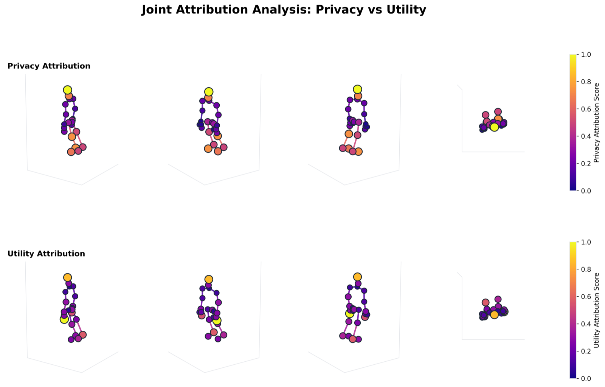
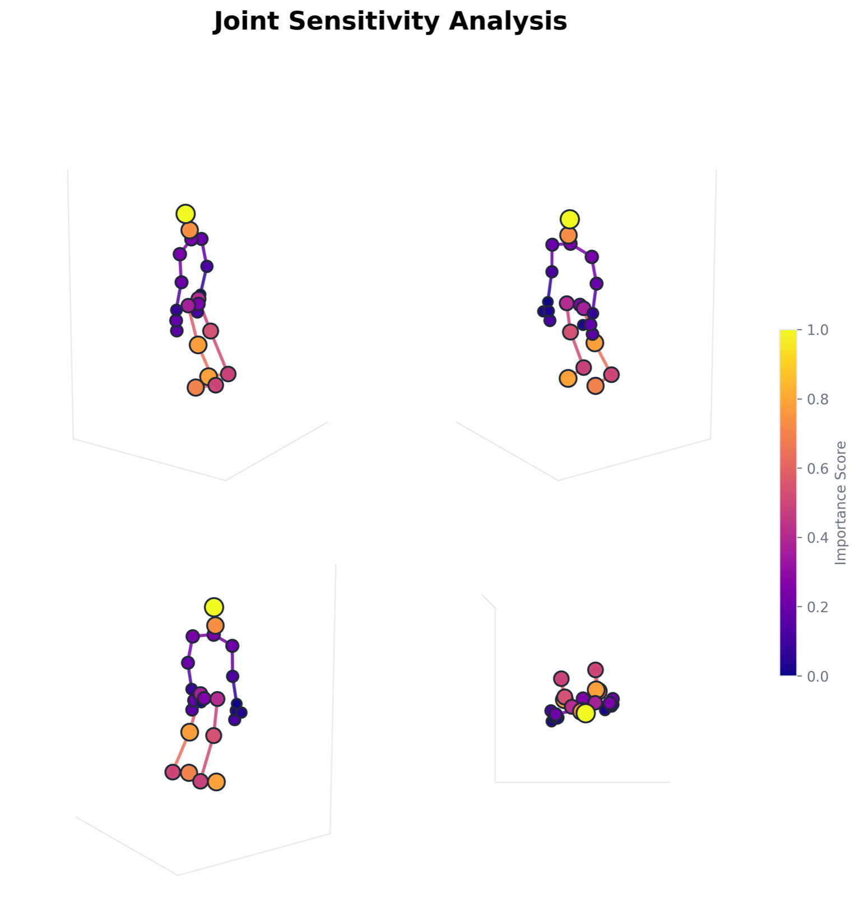
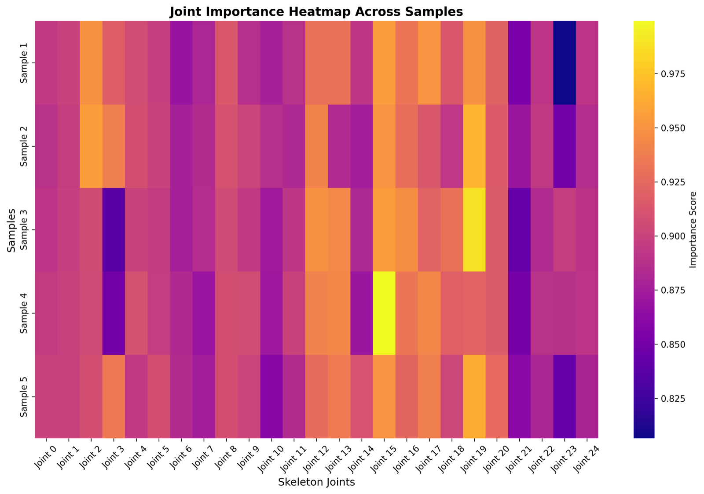
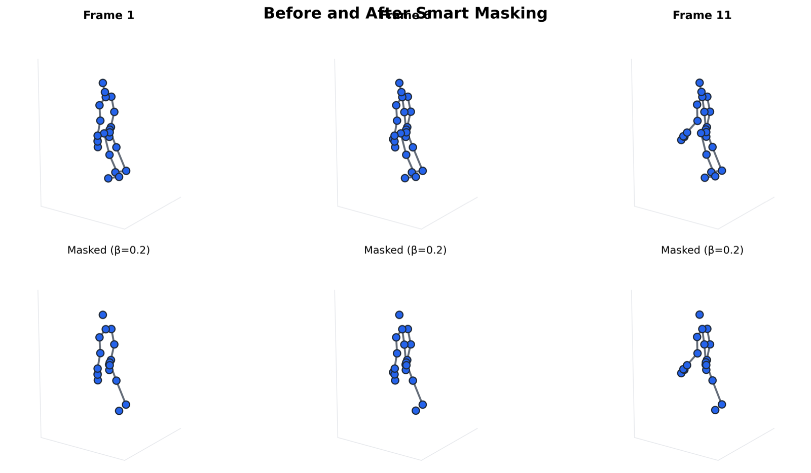
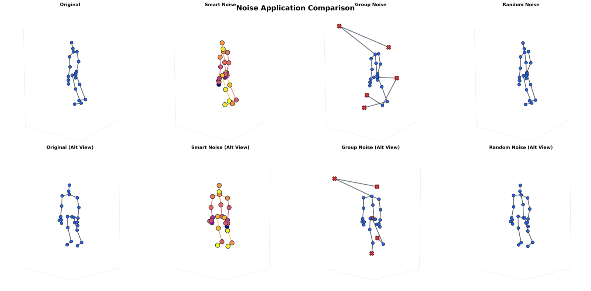
Animations
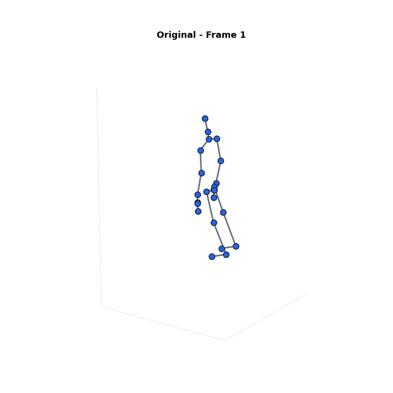
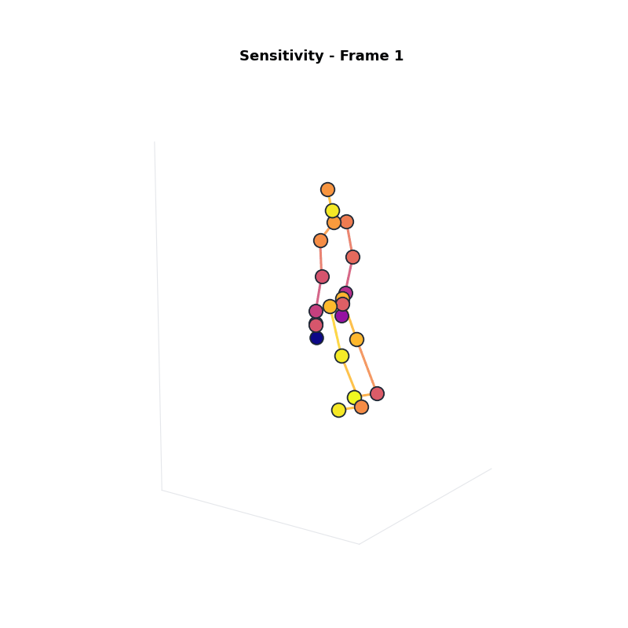
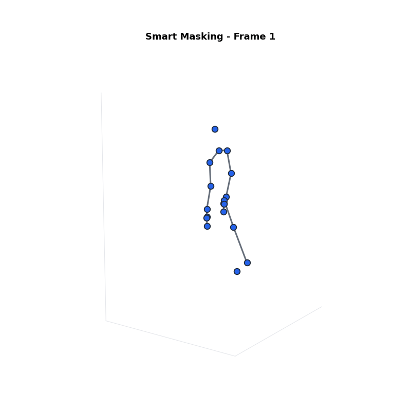
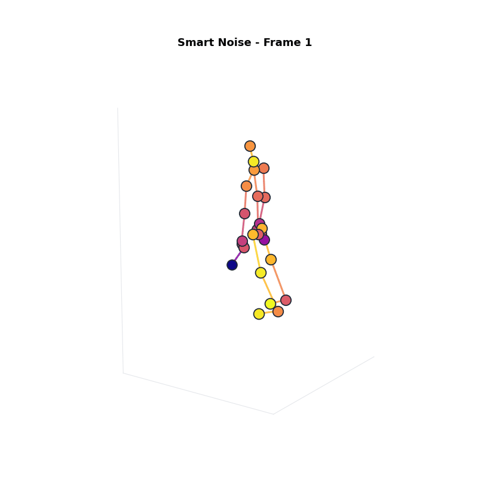
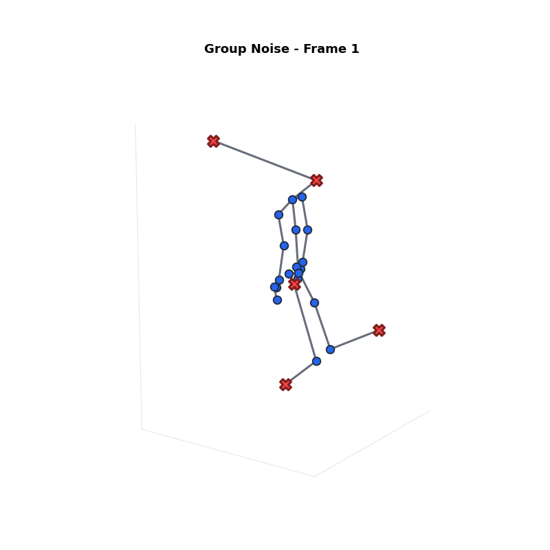
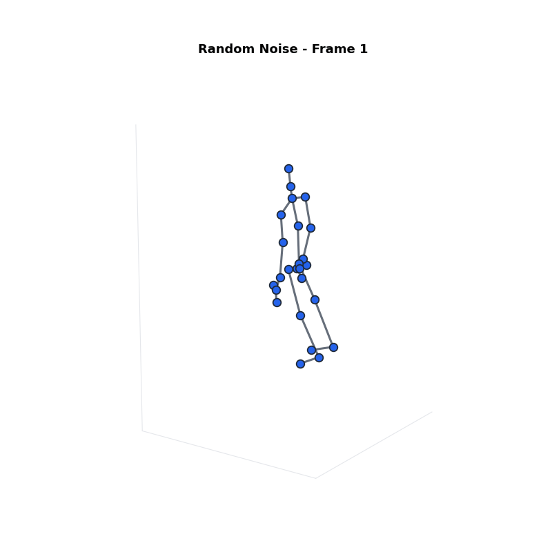
Reproduce
Running it yourself
The implementation extends the official SGN codebase with a re-identification head, the Integrated Gradients scoring module, and the three protection mechanisms as evaluation-time flags. Pre-trained checkpoints for every dataset and task are published as a GitHub release.
Backbone
- SGN (CVPR 2020)
- Joint + frame modules
- 3 GCN, 2 CNN layers
- Shared by fU and fP
Data
- NTU RGB+D 60 / 120
- 25 joints, 3D
- T = 75 frames
- Single actor, denoised
Attribution
- Integrated Gradients
- Captum implementation
- Zero baseline
- Absolute, mean-aggregated
Best settings
- α = 0.9
- β = 0.2
- σ = 0.01
- γ = 0.03 (Group Noise)
Setup
# Clone and install git clone https://github.com/Thomasc33/SGN.git cd SGN pip install -r requirements.txt # Download NTU RGB+D 60/120 skeletons, extract to ./data/ntu/nturgb+d_skeletons/ cd data/ntu python get_raw_skes_data.py # per-performer skeletons python get_raw_denoised_data.py # drop bad skeletons python seq_transformation.py # centre on first frame, write .h5
Train the two models
# case 0 = cross-subject, case 1 = cross-view # tag ar = action recognition (utility), ri = re-identification (threat) python main.py --network SGN --train 1 --case 0 --dataset NTU --tag ar python main.py --network SGN --train 1 --case 0 --dataset NTU --tag ri
Evaluate under each mechanism
# Smart Masking — the headline result (AR 81.23 / RI 21.82) python main.py --network SGN --train 0 --case 1 --dataset NTU --tag ar \ --load-dir results/NTUar --smart-masking 1 --alpha 0.9 --beta 0.2 # Smart Noise — best balance (AR 79.97 / RI 28.24) python main.py --network SGN --train 0 --case 1 --dataset NTU --tag ar \ --load-dir results/NTUar --smart-noise 1 --alpha 0.9 --sigma 0.01 # Group Noise — strongest privacy (AR 72.20 / RI 12.70) python main.py --network SGN --train 0 --case 1 --dataset NTU --tag ar \ --load-dir results/NTUar --group-noise 1 --alpha 0.9 --beta 0.2 --sigma 0.01 # Naïve Noise baseline python main.py --network SGN --train 0 --case 1 --dataset NTU --tag ar \ --load-dir results/NTUar --naive-noise 1 --sigma 0.01 # Consumer VR baseline — keep only head and both hands python main.py --network SGN --train 0 --case 1 --dataset NTU --tag ar \ --load-dir results/NTUar --mask 0 1 2 4 5 6 7 8 9 10 11 12 13 14 15 16 17 18 19 20 22 24
Regenerate the figures
pip install -r visualizations/requirements.txt python visualizations/run_visualizations.py
Citation
Cite this work
Thomas Carr, Yaxin Zhao, Depeng Xu and Aidong Lu. Explanation-Based Anonymization Methods for Motion Privacy. In Advances in Knowledge Discovery and Data Mining (PAKDD 2025), LNCS vol. 15873, pp. 52–64. Springer, Singapore, 2025. doi:10.1007/978-981-96-8183-9_5
@inproceedings{carr2025explanation,
title = {Explanation-Based Anonymization Methods for Motion Privacy},
author = {Carr, Thomas and Zhao, Yaxin and Xu, Depeng and Lu, Aidong},
booktitle = {Advances in Knowledge Discovery and Data Mining (PAKDD)},
series = {Lecture Notes in Computer Science},
volume = {15873},
pages = {52--64},
publisher = {Springer Nature Singapore},
address = {Singapore},
year = {2025},
doi = {10.1007/978-981-96-8183-9_5}
}
Related work from this line of research
PMR
Privacy-centric deep motion retargeting. Adversarial learning transfers motion onto a dummy skeleton, suppressing identity at the source instead of post-hoc.
pmr.thomasc.techDisentangledTMR
Factorized transformers that separate action from identity architecturally, with a three-stage curriculum for progressive disentanglement.
tmr.thomasc.techLinkage Attack (LAN)
The Siamese attack model that established how readily skeleton motion links back to an individual — the threat this line of defences answers.
linkage.thomasc.tech